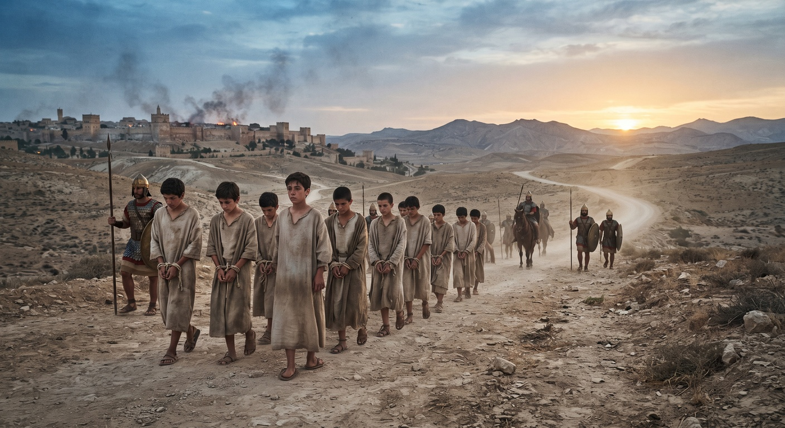

What It Actually Looked Like to Be a Teenager Taken Captive to Babylon

Daniel chapter one moves fast. Jerusalem is besieged, some temple vessels are taken, a handful of young men are selected, three years pass in a single verse, and by chapter two Daniel is already interpreting the king's dreams. It reads like a résumé. It was not a résumé. It was the total unmaking of a boy's identity, one deliberate step at a time, and scripture records every step on purpose.
The Selection Was Not Random
In 605 BC, Nebuchadnezzar's army took Jerusalem for the first time. Rather than deporting the population wholesale, he ordered his chief official, Ashpenaz, to select specifically from the royal family and the nobility, and specifically the young, the physically flawless, the intelligent, the ones already positioned to lead. That's not incidental cruelty. It's strategic. Nebuchadnezzar wasn't just capturing a city, he was harvesting Judah's future leadership before it could mature into anything that might resist him. Daniel was likely still in his teens. He didn't volunteer for any of this.
Three Years of Erasure
What happened next was a training program, and training programs sound clinical until you notice what was actually being trained out of these boys. They were taught Babylonian language and literature exclusively, for three full years, at an age when identity is still being formed. Ashpenaz renamed them, and the names weren't arbitrary. Daniel, "God is my judge," became Belteshazzar, invoking Bel, one of Babylon's chief gods. Hananiah, "the Lord shows grace," became Shadrach. The renaming wasn't administrative convenience. Every time a guard called him by that name, someone else's god got spoken over him instead of his own.
The One Door Still Open
This is what makes Daniel's refusal over the king's food, the very next thing scripture records about him, so much more than a dietary preference. By that point he had already lost his home, his family, his freedom, his native language of daily life, and even his own name. The food and wine from the king's table was one of the last remaining points of contact with his identity that he still had any say over at all, and he used it. Not as a grand act of defiance against an empire he had no power to resist, but as a quiet insistence that whatever else had been taken, this one thing would still belong to God.
That's the boy this book is actually about: not the confident interpreter of dreams that chapter two introduces, but the teenager a few chapters earlier who had almost nothing left to hold onto, and held onto it anyway.